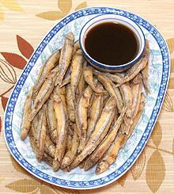

This West Pacific fish can grow to 3.5 inches but the photo specimen was 2-3/4 inches. A tray of 70 weighed 14 ounces, 0.2 ounces each, or 80 to the pound. They are found mainly in the South China Sea, from Borneo north to Taiwan and around the Philippines, and west around the Malay Peninsula. Color stripes (wide silver with narrow dark above) is like the Blue Anchovy, but this one is larger with a bigger eye and different shaped face.
More on Anchovies.
|  |
Buying:These can sometimes be found in the freezer cases of large Asian markets. The photo specimen, from Vietnam, was purchased from a large Asian market in Los Angeles (San Gabriel) for 2016 US $2.62 per pound. It was from a frozen batch packed on a foam tray sealed in a plastic bag, 14 ounces.Cooking:Clearly you are not going to be filleting this fish except under a microscope. This is a fish to fry crisp and eat "head guts and feathers" - not an exact fit to the the delicate sensibilities of the baby spinach set.
|